Rear Door Disassembly |
| 1. Disconnect Battery Negative Terminal |
| 2. Remove Rear Door Inside Handle Bezel RH |
 |
Using a screwdriver with its tip wrapped in protective tape, disengage the 3 claws and remove the rear door inside handle bezel RH.
| 3. Remove Door Assist Grip Cover RH |
 |
Using a screwdriver with its tip wrapped in protective tape, disengage the 4 claws and remove the door assist grip cover RH.
| 4. Remove Rear Door Trim Board Sub-assembly RH |
 |
Remove the 3 screws.
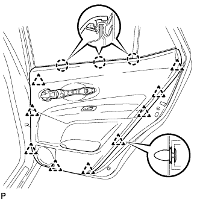 |
Using a clip remover, disengage the 9 clips.
Disengage the 3 claws and disconnect the rear door trim board RH from the rear door glass weatherstrip inner RH.
 |
Disengage the 2 claws and remove the rear door trim board RH from the rear door inside handle RH.
Disconnect the connector.
| 5. Remove Rear Door Inside Handle Sub-assembly RH |
 |
Disconnect the rear door lock remote control cable RH and rear door inside locking cable RH, and remove the rear inside handle RH.
| 6. Remove Rear Power Window Regulator Switch Assembly w/ Switch Base |
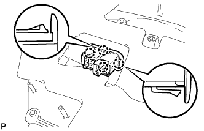 |
Disengage the 4 claws and remove the rear power window regulator switch assembly w/ switch base.
| 7. Remove Power Window Regulator Switch Assembly RR |
 |
Using a screwdriver, disengage the 2 claws and remove the rear power window regulator switch assembly from the switch base.
| 8. Remove Rear Door Glass Weatherstrip Inner RH |
 |
Remove the rear door glass weatherstrip inner RH from the rear door panel.
| 9. Remove Speaker Assembly RR |
 |
Disconnect the connector.
Remove the 3 rivets and remove the speaker assembly RR from the rear door.
| 10. Remove Rear Door Service Hole Cover RH |
 |
Disconnect the connector.
Remove the rear door service hole cover RH.
| 11. Remove Rear Door Check Assembly RH |
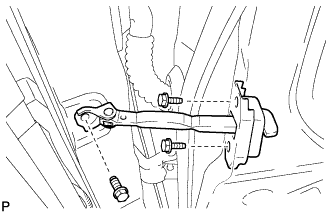 |
Remove the 3 bolts and remove the rear door check assembly RH.
| 12. Remove Rear Door Weatherstrip RH |
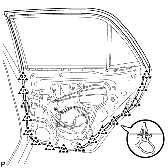 |
Using a clip remover, disengage the 17 clips and remove the rear door weatherstrip RH.
| 13. Remove Rear Door Frame Garnish RH |
 |
Using a screwdriver with its tip wrapped in protective tape, disengage the clips and remove the rear door frame garnish RH.
| 14. Remove Rear Door Glass Run RH |
 |
Remove the rear door glass run RH.
| 15. Remove Rear Door Window Division Bar Sub-assembly RH |
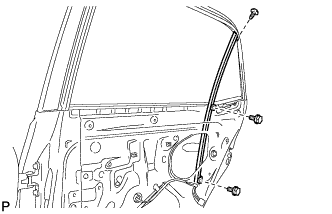 |
Remove the screw and 2 bolts, and remove the rear door window division bar RH.
| 16. Remove Rear Door Quarter Window Glass RH |
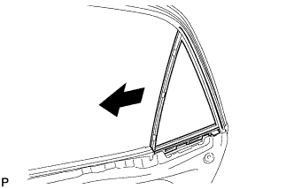 |
Pull the rear door quarter window glass RH toward the front of the vehicle, and remove it together with the rear door quarter window weatherstrip RH.
Remove the rear door quarter window glass RH from the rear door quarter window weatherstrip RH.
| 17. Remove Rear Door Glass Sub-assembly RH |
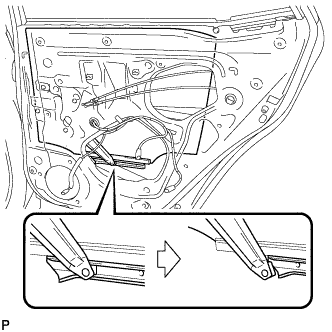 |
Slide the rear door glass RH toward the rear of the rear door and remove it from the rear door window regulator RH.
| 18. Remove Rear Door Window Regulator w/ Motor Assembly |
 |
Disconnect the power window regulator motor assembly RH connector.
Loosen the temporary bolt.
Remove the 3 bolts and remove the rear door window regulator w/ motor assembly.
Remove the temporary bolt from the rear door window regulator RH.
| 19. Remove Power Window Regulator Motor Assembly RH |
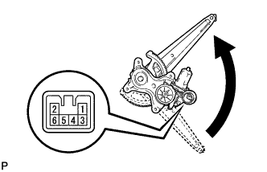 |
Connect the positive (+) battery lead to terminal 1 and the negative (-) battery lead to terminal 2 of the power window regulator motor assembly RH connector, and move the lift arm to the position shown in the illustration.
 |
Using a torx socket wrench T25, remove the 3 torx screws and remove the power window regulator motor assembly RH from the rear door window regulator RH.
| 20. Remove Rear Door Lock Assembly RH |
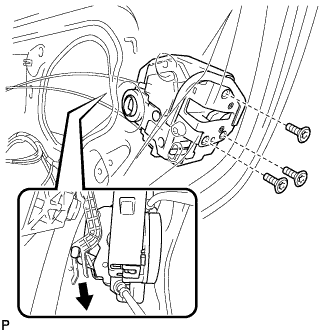 |
Using a torx socket wrench T30, remove the 3 torx screws.
Slide the rear door lock assembly RH downward, pull out the release plate of the rear door outside handle frame RH, and remove the rear door lock assembly RH.
Remove the door lock wire harness seal from the rear door lock assembly RH.
| 21. Remove Rear Door Lock Remote Control Cable Assembly RH |
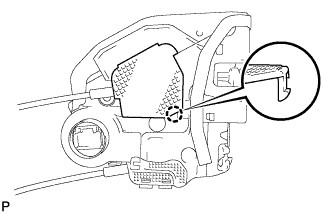 |
Using a screwdriver with its tip wrapped in protective tape, disengage the claw of the rear door lock assembly RH.
 |
Remove the rear door lock remote control cable RH from the rear door lock assembly RH.
| 22. Remove Rear Door Inside Locking Cable Assembly RH |
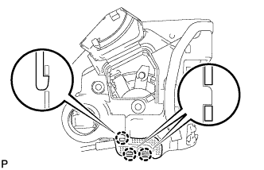 |
Using a screwdriver with its tip wrapped in protective tape, disengage the 3 claws of the rear door lock assembly RH.
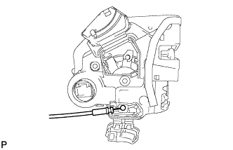 |
Remove the rear door inside locking cable RH from the rear door lock assembly RH.
| 23. Remove Rear Door Outside Handle Cover |
 |
Using a torx socket wrench T30, remove the torx screw.
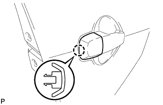 |
Disengage the claw and remove the rear door outside handle cover.
| 24. Remove Rear Door Outside Handle Assembly RH |
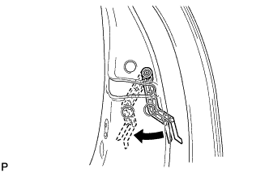 |
Raise and hold the release plate of the rear door outside handle frame RH as shown in the illustration.
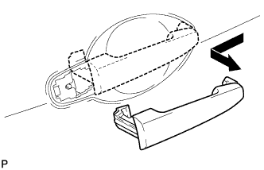 |
Pull the rear door outside handle assembly RH toward the rear of the vehicle to disengage it from the rear door outside handle frame assembly RH.
Pull the rear door outside handle assembly RH toward the outside of the vehicle and remove it from the rear door outside handle frame assembly RH.
| 25. Remove Rear Door Outside Handle Pad FR |
 |
Using a torx socket wrench T30, remove the torx screw.
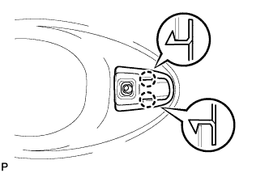 |
Disengage the 2 claws and remove the rear door outside handle pad FR.
| 26. Remove Rear Door Outside Handle Pad RR |
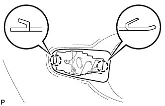 |
Disengage the 2 claws and remove the rear door outside pad RR.
| 27. Remove Rear Door Outside Handle Frame Sub-assembly RH |
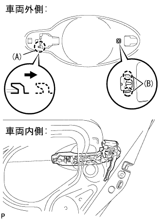 |
Disengage the 2 claws (B).
Pull the rear door outside handle frame RH toward the front of the vehicle to disengage claw (A), and remove it from the rear door panel.
| 28. Remove Rear Door Belt Moulding Assembly RH |
 |
Apply protective tape to the body surface below the rear door belt moulding assembly LH.
Using a screwdriver with its tip wrapped in protective tape, disengage the 8 claws from the inside of the door and remove the rear door belt moulding assembly LH.
| 29. Remove Blackout Tape NO.3 RH |
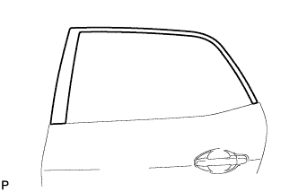 |
Using an infrared lamp, loosen blackout tape No.3 LH.
Raise the end of blackout tape No.3 LH with a fingernail and peel it off parallel to the application surface.